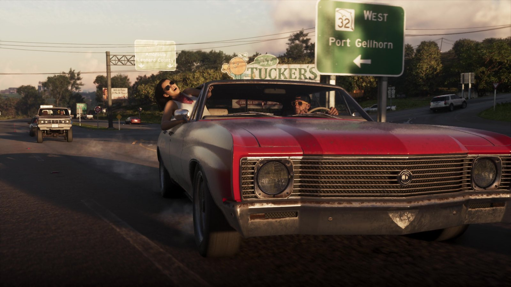
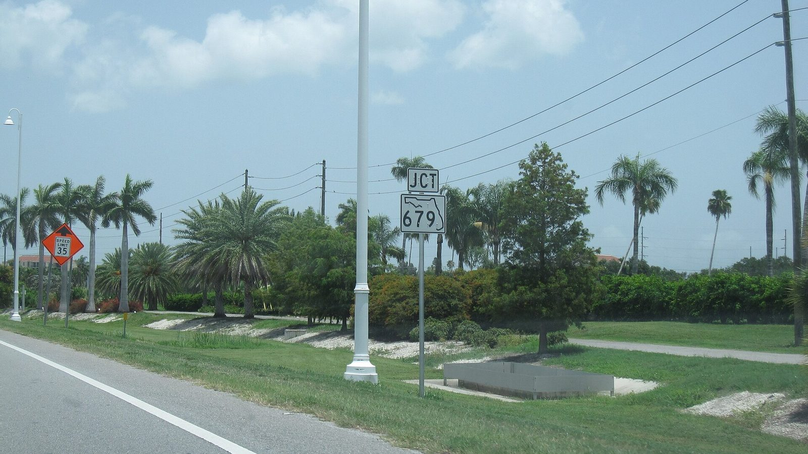

Номер трассы в контуре штата
Опубликовано:
Флорида рисует номера своих дорог внутри контура штата. Rockstar повторила правило, только заменила Флориду на Леониду.


- На указателе в игре число 32 вписано в контур штата.
- Во Флориде так выглядят знаки дорог штата (State Road).
- Rockstar заменила силуэт Флориды на силуэт Леониды.
- Деталь видна всего пару секунд.
Что в игре
На отметке 06:10 «Расширенного показа» герои едут по шоссе, и над дорогой висит зелёный указатель «West 32 — Port Gellhorn». Номер трассы нарисован внутри белого силуэта — не круга и не щита, а формы самого штата Леонида.
Что в реальности
Во Флориде у каждой дороги штата (State Road) свой знак: чёрное число внутри белого силуэта Флориды. Такие знаки стоят по всему штату, от Панхандла до Кис. У федеральных трасс и межштатных автомагистралей свои, другие щиты.
Так делают не все штаты. Многие рисуют номер в круге или простом прямоугольнике, но несколько штатов, включая Флориду, ставят его внутрь собственного контура. Поэтому по одному этому знаку в игре можно понять, какой штат был прототипом Леониды.
Совпадает и отличается
| Флорида | Леонида | |
|---|---|---|
| Номер внутри силуэта штата | Да | 🟢 Да |
| Форма силуэта | Флорида | 🟡 Леонида |
| Зелёные указатели направлений | Да | 🟢 Да |
Мелочь, которую большинство не заметит, — хороший пример того, насколько подробно Rockstar копирует Флориду.
Источники: Rockstar Games — «Расширенный показ» (06:10); Florida Department of Transportation (знаки дорог штата); фото знака — Wikimedia Commons.
Реальные фото: Фото: The Eloquent Peasant, CC BY-SA 4.0 · Wikimedia Commons. Кадры игры: Rockstar Games.
Каждый день — одно сравнение: кадр игры рядом с реальным фото. Подписывайтесь:
YouTubeInstagramTikTok
 vs
vs
 vs
vs
 vs
vs